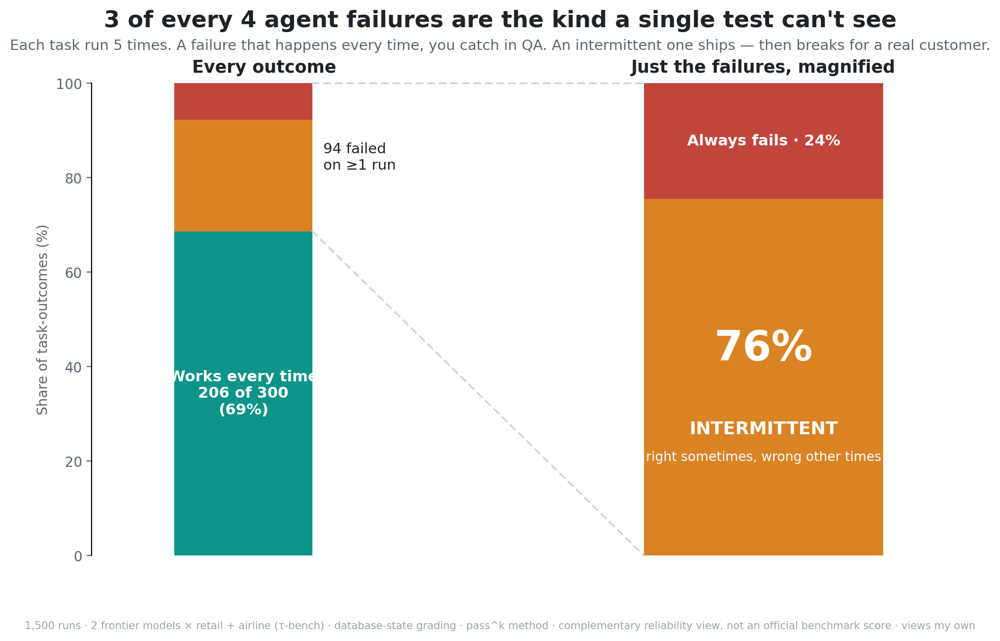

We expect software to fail deterministically: same input, same failure, every time — so you catch it in testing. Agents don't play by that rule, and the data shows why it matters.
Agents fail with a probability, not a verdict
We've lived with flaky tests for years — the ones that pass, then fail, then pass again. We learned to expect that from race conditions and flaky networks. An agent's nondeterminism is different in kind: the model samples, so the same prompt can take a different reasoning path on every run. A task isn't simply "solved" or "broken" — it's solved with a probability.
That probability is invisible to the way we usually test. Run a task once, see it succeed, call it done — and you've measured a coin flip by flipping it a single time.
Three buckets, 1,500 runs
To see the shape of it, I ran two frontier models as customer-service agents across 150 tasks (100 retail, 50 airline), 5 runs each — 1,500 runs in total — and sorted every task into three buckets:
- ✅ Works every time — passed all 5 of 5
- ⚠️ Inconsistent — passed some runs, failed others (1–4 of 5)
- ❌ Fails every time — failed all 5 of 5

Three in four failures are the inconsistent kind
Look only at the tasks that ever failed. Across both models and both domains, 71 were inconsistent and only 23 failed every time — roughly 3 in 4 failures were inconsistent, not repeatable. The pattern is stable across every cell:
| Dataset (model as agent) | Works every time | Inconsistent | Fails every time |
|---|---|---|---|
| Retail · Model A | 70 | 23 | 7 |
| Retail · Model B | 72 | 23 | 5 |
| Airline · Model A | 29 | 14 | 7 |
| Airline · Model B | 35 | 11 | 4 |
| Pooled | 206 | 71 | 23 |
Two models, two domains, and the inconsistent slice is the larger share of failures every time. This isn't a quirk of one model or one task set.
Why inconsistent is the dangerous kind
A failure that happens every time is the friendly one. It breaks in your demo, it breaks in QA — you see it, you fix it before launch.
An inconsistent failure passes your demo. It passes QA. You ship with confidence. Then it fails for a real customer on the one run that happens to break — and when you go to reproduce it, it works fine.
The failures that are hardest to catch are also the most common. That is the uncomfortable core of agent reliability: the dominant failure mode is exactly the one a single test run is blind to.
The cheapest defense is the most ignored
You can't see inconsistency by running a task once. You see it by running the
same task many times and asking a stricter question: did it work
every time? That's the difference between
pass@1 (succeeded at least once) and pass^k
(succeeded all k times) — and the gap between them is the
inconsistency.
Practically: run your eval set k times, not once, and track the
rate at which it passes every time. It costs k× the eval budget and surfaces
the risk that would otherwise reach a customer first.
How it was measured
- Tasks: τ-bench retail + airline (Sierra Research) — real multi-turn tasks with a simulated user and a tool environment.
- Grading: the actual database end-state — did the order / booking really end up in the correct state. No LLM judge, so no judge variance in the signal.
- Scale: 150 tasks × 5 runs × 2 models = 1,500 episodes. Each model runs as the agent; only the provider changes.
- Definitions: "inconsistent" = passed on at least one run and failed on at least one. "Fails every time" = 0 of 5.
Honest caveats
Airline is 50 tasks per model, so its per-cell counts are smaller and noisier than retail's 100. The robust claim is the proportion — inconsistent failures dominate in every cell (67–82%) — not the precise per-model splits. This is database-state grading only (it doesn't judge communication quality), and a complementary reliability view, not an official benchmark score.
Reproduce it
The harness, the data, and the method are open-source:
pip install -e ".[providers]"
arprobe eval --harness direct --model gemini/gemini-3.5-flash --k 5Code, methodology, citations, and per-task data: github.com/tanwargenairesearch/agent-reliability-probe
← Note 1: Capable isn't the same as dependable · Next: when agents fail inconsistently, how do they break?